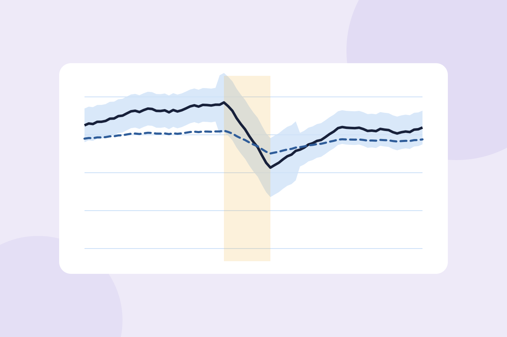
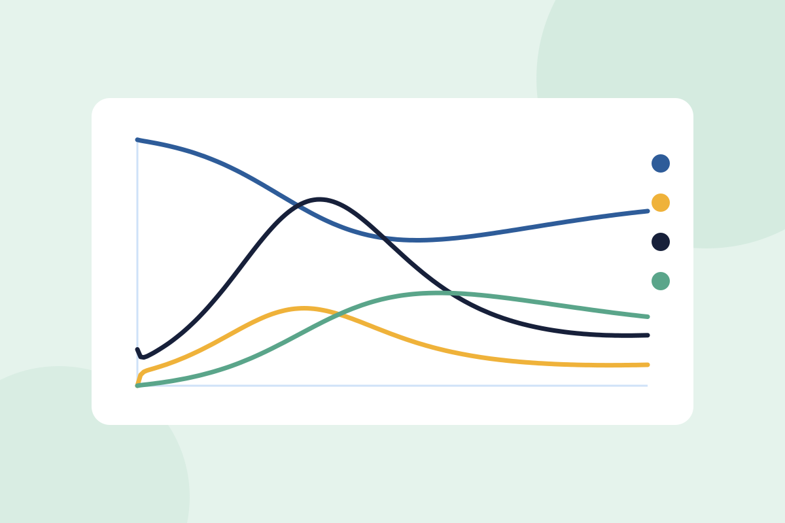
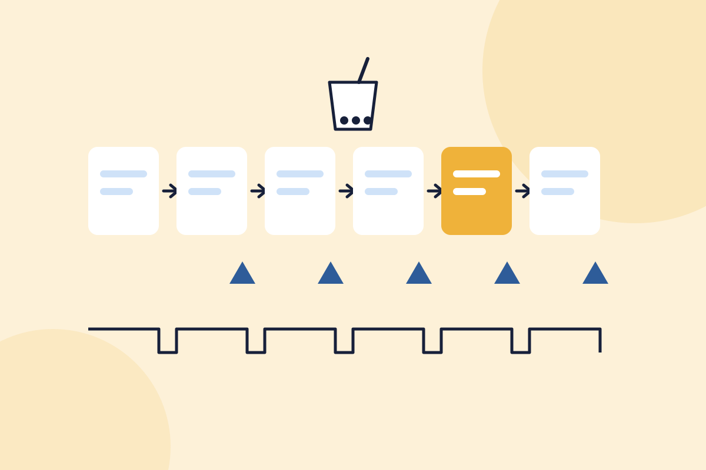
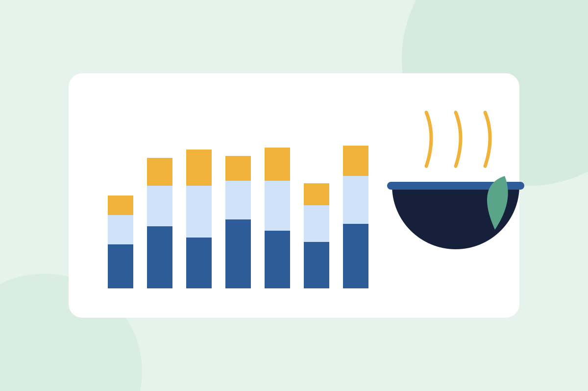
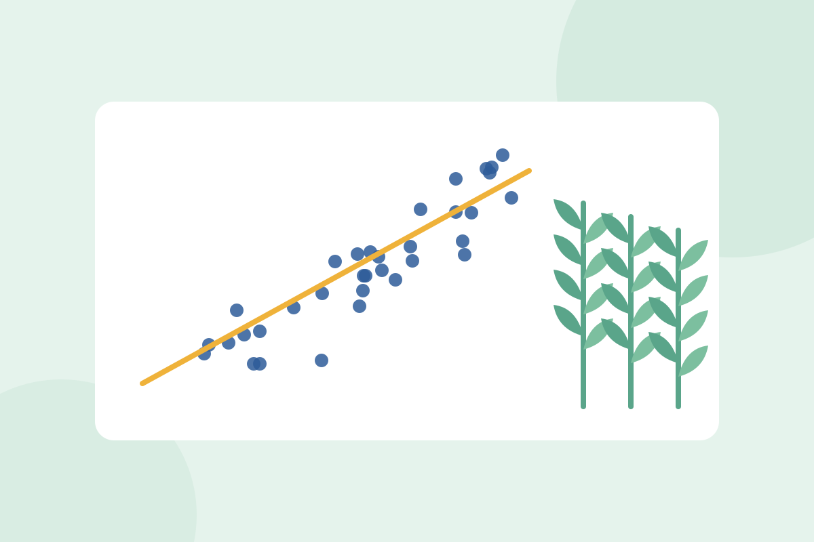
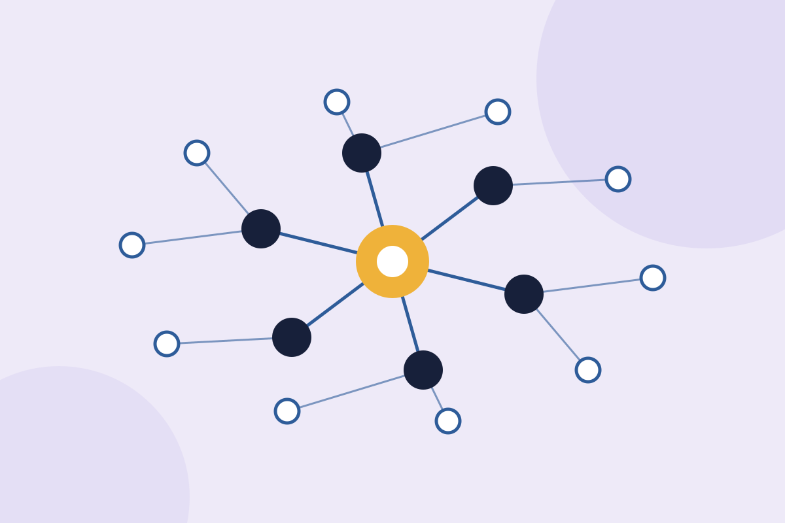
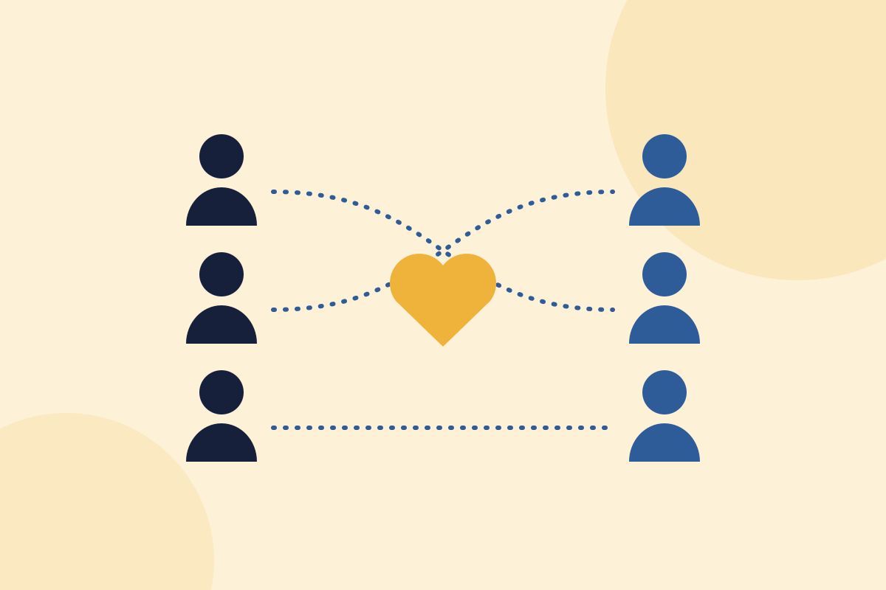

SUTD Entrepreneurship Capstone
Franca
An AI workspace where engineering teams ask plain-English questions across SQL and NoSQL databases.
36database engines supported by the live prototype
- AI agents
- SQL & NoSQL
- AWS
- User research

Engineering Systems Design student at SUTD
I work where operations meet data and AI: warehouse digital twins, optimisation models, dashboards and AI agents. These are the projects I’ve built along the way.
I’m a final-year Engineering Systems Design student at SUTD, specialising in Data Analytics on the Business Analytics & Operations and Supply Chain & Logistics tracks, with a minor in Artificial Intelligence.
I like problems where a process quietly loses time or money: a warehouse that can’t trace its cartons, a kitchen that over-prepares, a counter where orders pile up. I find where it happens in the data, then build the model, dashboard or tool that fixes it.
Most recently I was an AI & Data Transformation intern at EY, and I’m co-founding Franca, an AI agent that lets engineers query their databases in plain English.
Value stream mapping, production planning and warehouse visibility.
See Warehouse Digital Twin Command Centre, Value Stream Mapping of Beverage Operations
Dashboards, forecasting and optimisation models that turn messy data into decisions.
See Scholarship Disbursement Optimisation, Inventory & Production Optimisation
AI agents, NLP and generative AI, built around real users and safe access to data.
Where I’ve worked, studied and led.
Ernst & Young Advisory, Technology Consulting
APAC Effie Awards, Judging & Gala Night
Youth Corps Singapore, National Parks Board
Google Developer Student Club, SUTD
SUTD Productions
B.Eng. Engineering Systems Design (Data Analytics), Honours
Global Exchange Programme, Hong Kong
Summer Programme, South Korea
Industrial and academic work across supply chain, analytics and AI. Open a project for the full story.
SUTD Entrepreneurship Capstone
An AI workspace where engineering teams ask plain-English questions across SQL and NoSQL databases.
DSV Singapore
A command centre web app that links inbound and outbound warehouse data, so workers can trace each shipment and carton in one place.
Hong Kong University of Science and Technology
Risk models and Monte Carlo simulations testing which hedging strategies hold up when markets are in crisis.

Singapore University of Technology and Design
A nonlinear SEIR epidemic model with newborn vaccination as the control input, plus a controller and observer designed for it.

LiHO TEA (Changi City Point)
A lean study of a made-to-order drinks counter, mapping where each order loses time and how to win it back.

Ngee Ann Kong Si
A Power BI dashboard, tuition forecasts and an optimisation model for allocating scholarship quotas across 8 faculties.

Local Korean Chinese Restaurant
A MILP model that plans set meal production for profit while cutting ingredient waste.

Singapore University of Technology and Design
A predictor website and regression models for cassava, corn and soybean yields across ASEAN countries.

Fast builds with small teams, from civic tech to tools for seniors.
Semifinalist, top 6 nationwide, Huawei Smart City Challenge (NAISC)
AI-assisted civic reporting with geotagging and a live dashboard.

Participant, SMUBIA Datathon 2025
Turns PDFs, articles and plain text into entity-relationship diagrams, knowledge graphs and word clouds.

3rd place, Dell Technologies InnovateFest 2024
A senior-friendly app and volunteer dashboard for Lions Befrienders, with buddy matching and AI workshop ideas.
Best Business Idea, NTU AI and Entrepreneurship Programme
A tuition centre concept combining AI learning tools, gamification and VR/AR.
The tools I reach for, grouped by the kind of work they’re for.
I’m open to graduate roles in supply chain analytics, business analytics and applied AI. Email is the quickest way to reach me.